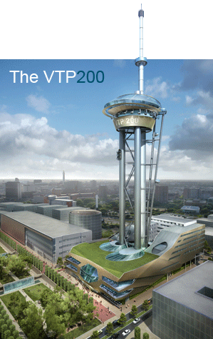
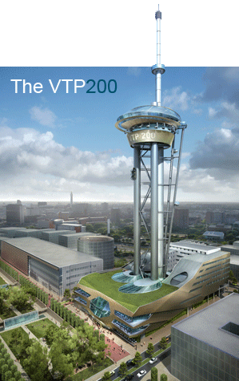

I’m posting this without comment because I’m kinda speechless. In a positive way though.

The Stirrer is very impressed.
Nothing in the mainstream press yet.
A scale model will be at Millennium Point from Saturday.
Wow. Just wow.

I’m posting this without comment because I’m kinda speechless. In a positive way though.

The Stirrer is very impressed.
Nothing in the mainstream press yet.
A scale model will be at Millennium Point from Saturday.
Wow. Just wow.
Comments are closed.
I just don’t see the point in it. And what’s with the obsession of building upwards? I’m sure Freud would have a lot to say about this :-P
I think the point is that there is no point. A marvelous folly in the true sense of the word.
And at least some of it is real as I’ve had (very early) discussion with the City Council about the standard/regulation of the theme park rides.
Do hope it’s built, it’s just so monumentally silly.
!
Completely friggin’ bananas!
Part of me thinks it’s great that people are being ambitious. Another part of me agrees that this seems very much like small willy syndrome.
that’s genius lunacy, now if there was only something interesting to see in the Birmingham skyline
Do we think that the rides will still be working in 2050? Probably not.
Great idea! Naff name!
And we can’t have a ride called the ‘giro’…too many UB40 connotations!
“Do we think that the rides will still be working in 2050? Probably not.”
Yeah, but I’ll probably be dead in 2050. I’d expect most of Birmingham will need replacing by then and I’d hope the future leaders have the vision to keep moving forward. (Sorry about the pun)
50 years is a long time in Birmingham terms. Most of the city is only 150 years old, if that!
I have been involved with this project (see photo on video about 3.36mins!!), and from what I hear, the name will change after completion. Definately in the planning channels, as again, we have done the planning photos. Seems absolutely great to me.
I live in birmingham!! how the hell did i not know about this?!! lol
Well Simon, it was only announced yesterday!
You won’t get me up in that thing!
Wow – looks cool, have to say its quite exciting!
Its definatly something thats needed in Birmingham!!
Feels a bit like building a landmark for a landmarks sake rather than a real landmark its neither a monument to anything nor of any real purpose. Reminds me of the towers erected in ‘new’ city’s like Auckland and Dubai, surely Birmingham has a history to celebrate before we invest in yet more business centric shopping-leisure megaplexes..
I have been trying to think rationally about this project and I think “jk” has hit the nail on the head. If there is one thing that should be celebrated in Birmingham it’s the canal system, reportedly short of funding yet one of the most serious attractions the city has to offer visitors. I shall never forget returning to Birmingham after many years just at the time of the G7 meeting. It was a gloriously sunny April day and Brindley Place was simply incredible. A few weeks later, American friends attended a science/industry conference at the ICC and returned with nothing but good to say about the city. To be honest I was very, very surprised! But that is the sort of impression that’s needed. There are already plenty of towers around the world, most of them taller, in fact VTP200 would be 22nd out of 27 in terms of height!
if it was in manchester people’d be goin “wow manchesters got that why can’t birmingham do something like it?” !!!
JK: “surely Birmingham has a history to celebrate before we invest in yet more business centric shopping-leisure megaplexes”
Yes, but that history is being celebrated. Local history is a thriving department at the library and the weekend’s BLAST performance shows the arts bods aren’t afraid to play with it. Then there’s last weekend’s Open House thing from the heritage sector. It’s all go.
Paul: “If there is one thing that should be celebrated in Birmingham it’s the canal system, reportedly short of funding yet one of the most serious attractions the city has to offer visitors.”
I agree, but the money for the VTP is coming from the private sector so it shouldn’t detract from any canal investment (which was cut by a centralised body (British Waterways?) not the city council.)
That said, the end of the forthcoming Eastside Park meets with the canals on Curzon St and is supposed to work well with them ala Brindley Place.
Can I just remind you all of the history Birmingham has of developing large leisure schemes like this. Millennium Pointless remains in my view a nice enough building but is certainly not used to its full potential and has resorted to housing City Council Employees and UCE, perhaps temporarily. Do we need Alton Towers at the heart of the city? Where are the fine grain and human scale developments that make great cities? (Would Barcelona, Rome, Edinburgh or even Manchester etc really want one)? We should be attracting or developing independent shops and bars in Eastside not theme parks. May I remind you all of two things, firstly the Mailbox haemorrhages retail bars at an alarming rate of knots and no one eats anything in millennium pointless if they can help it.
Architecture and morality | jon bounds
[…] more so than with buildings and design, as they are subjects everyone can have an opinion on. As a sometime professional […]
the obsession with building up is to preserve or because of a lack of space.
I dont think it has anything to do with heritage v’s contemporary; I think it is about taste.
Barcelona – la ramblas does Art Nouveau, Birmingham does garish again…. Don’t get me wrong I am proud of Birmingham and it has some fantastic architecture and fantastic architect practises.
But as far as i am concerned whoever designed the VTP 200 is saying look at my c#ck, and once built in Birmingham, Birmingham will be saying the same.
No classics here folks, or understated sophistication; nope, instead we choose crude.
By the way Brindley place is fantasic yes, probably because its privately owned and managed by private sector not BCC, its a Business Improvement District which is why its so pleasant to visit.
Wow yea, lets turn Birmingham into a theme park… think we need to do away with these rather useless landmark developments, Selfridges is bad enough. People will get tired of saying ‘wow’ after a few years, then all we will be left with is a swaithe of junk architecture that will be torn down only to be replaced by the same rubbish. Do we really want the rest of Birmingham to resemble Star City? The folks at the planning and architecture dept need to be using their brains more than their balls.
Pete Ashton’s Blog » Auckland skyline
[…] Sky Tower is of particular interest to me as Birmingham is due to get something similar, not only in style but in purpose. This one also offers bungee jumping and a “sky walk” around the […]
dont the council hav nefink 2 spend der money on ?? i mean dey wana evict ppl out der houses and put bus fairs up and road tax but yet hav 70 odd million 2 spend on sum stupid theme prk shoppin centre fing wen drayton mannors up d rd and bullring is hw many metres away its just silly really
Well I think its fantastic, get it built quick, a great tourist attraction for Birmingham, i’m sure when building the canals there were those that stated they would be a waste of money. Just think would people visit Paris with Eiffel’s tower or Toronto without the CNN tower, I doubt as many would anyway. What more stupid is the language used by last writer, speak English or not at all, but having deciphered your message, Drayton Manor & the Bull Ring are privately funded as will this, council houses and buses public funded so it wont change a thing.